평점 10점인데 떨어진 게임과 베이직 런치
쪼꼬미 용병단(Chokkomi Mercs)은 용병을 뽑고 키워서 리그에서 싸우게 하는 픽셀 오토 배틀러예요. 팀은 이 게임을 AI와 함께 바이브 코딩으로 만들었어요. AI 덕분에 직업 100개, 스킬 600개, 챔피언 20명의 원정, 철문 방어, 전설의 전당까지 콘텐츠를 크게 늘렸어요. 만들 때는 이 많은 콘텐츠가 문제가 될 줄 몰랐다고 해요.
평점은 10점 만점에 10점, 좋아요 31개에 싫어요 0개였어요. 그런데도 크레이지게임즈 개발자 대시보드에는 탈락 알림이 떴어요. 아래 화면에서 게임 이름 아래 빨간 'REJECTED' 표시와, 알림 칸의 'performance benchmarks에 못 미쳤다'는 피드백을 보면 돼요.
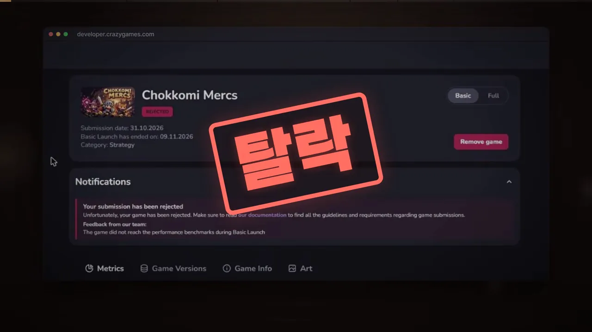
베이직 런치는 어떤 시험인가요
크레이지게임즈는 전 세계 사람들이 브라우저로 게임을 하러 오는 웹게임 포털이에요. 여기에 게임을 올려도 바로 정식 출시(풀 런치)가 되지 않아요. 먼저 베이직 런치라는 시험을 봐요. 광고를 끈 채 일부 유저에게만 7~21일 동안 게임을 보여 주고, 플레이가 500번 쌓이면 성적을 매겨요.
과목은 세 개예요. 아래 슬라이드의 카드 세 장이 평균 플레이 시간, D1 리텐션, 게임 전환율이에요. 카드마다 1~5점 칸이 있고, 그 아래 데스크톱과 모바일을 따로 15점 만점으로 매겨서 9점 이상이면 합격이라고 적혀 있어요.
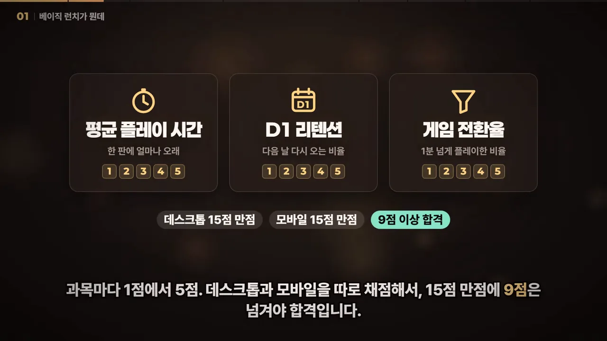
팀은 10월 31일에 제출했어요. 화면의 일정표는 11/01 시험 시작, 11/09 결과 발표예요. 말로는 11월 2일부터 시작됐다고 해서, 시작일은 하루 차이가 나요. 아래 화면 가운데 작은 칸들이 시험 기간에 올린 빌드 기록이에요. 빌드 1(11/01 00:37)부터 빌드 18(11/07 07:09)까지, 일주일 동안 18번을 갈아 끼웠어요.
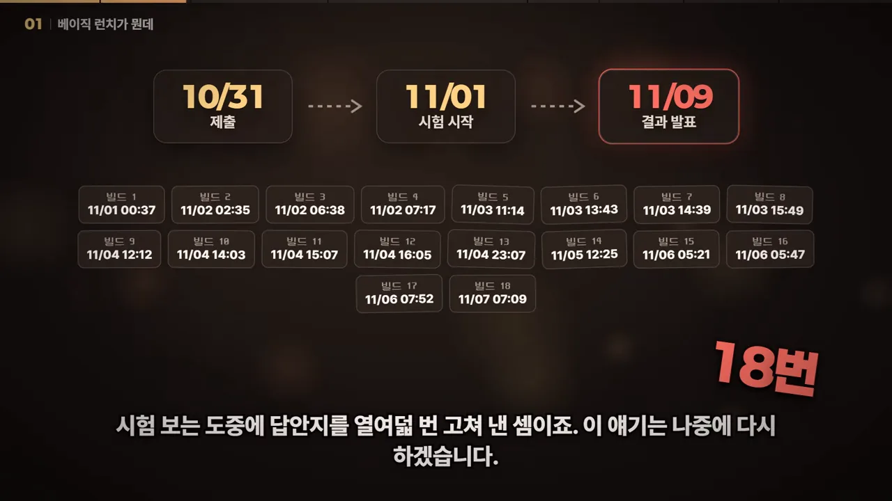
성적표: 데스크톱 5점, 모바일 6점
성적표는 데스크톱 15점 만점에 5점, 모바일 15점 만점에 6점이었어요. 아래 화면의 두 카드 모두 막대가 '합격선 9' 표시에 한참 못 미치고, 오른쪽 위에 '탈락' 도장이 찍혀 있어요.
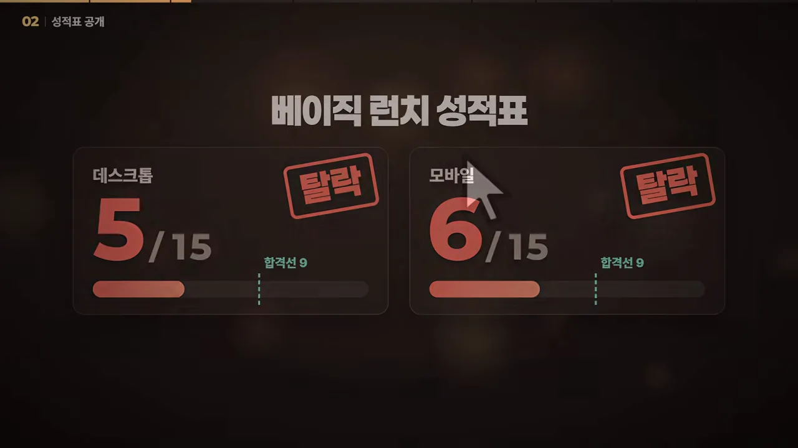
과목별 점수는 세 장의 슬라이드에 나눠 나왔어요. 한 표로 모으면 이래요. 괄호 안은 한 단계 위 점수를 받으려면 필요했던 값이고, 오른쪽 열은 슬라이드가 함께 인용한 크레이지게임즈 문서의 문장이에요.
| 과목 | 데스크톱 | 모바일 | 문서가 말하는 잘 되는 게임 |
|---|---|---|---|
| 평균 플레이 시간 | 8분 34초 → 2점 (3점은 9분 53초) | 5분 14초 → 2점 (3점은 7분 54초) | 보통 10분 이상 |
| D1 리텐션 | 2.35% → 2점 (3점은 3.23%) | 4.08% → 3점 (4점은 6.49%) | 강한 게임은 10~15% |
| 게임 전환율 | 42.86% → 1점 (2점은 46.67%) | 18.42% → 1점 (2점은 23.14%) | 최상위 게임은 80% 이상 |
| 합계 | 5 / 15 | 6 / 15 | 커트라인 9점 |
데스크톱 평균 플레이 시간은 3점까지 1분 19초가 모자랐어요. 영상은 '라면 하나 더 끓일 시간'이라고 표현해요. D1 리텐션은 100명이 해 보면 다음 날 두세 명만 돌아오는 수준이에요. 게임에 출석 체크 기능이 있었지만 출석할 사람이 없었어요.
가장 처참한 과목은 전환율이에요. 아래 화면에서 데스크톱과 모바일 두 게이지가 모두 빨간 1점이고, 그 아래 '최상위 게임은 80% 이상'이라는 문서 인용이 붙어 있어요. 1점이 최저점이라 0점이 없어서 다행이었다는 농담이 따라와요.
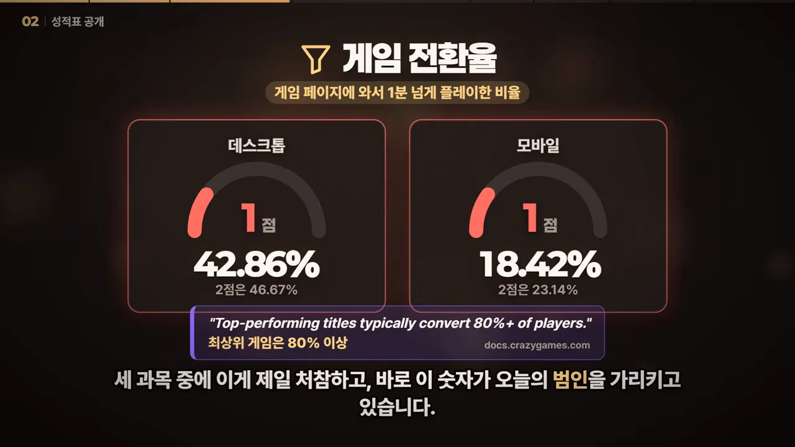
범인은 첫 1분이었어요
영상이 설명하는 전환율은 분수 하나예요. 아래 슬라이드처럼 분모는 '게임 페이지에 들어온 사람', 분자는 '1분 이상 플레이한 사람'이에요. 결국 첫 1분을 버티게 하느냐, 이것만 보는 과목이에요.
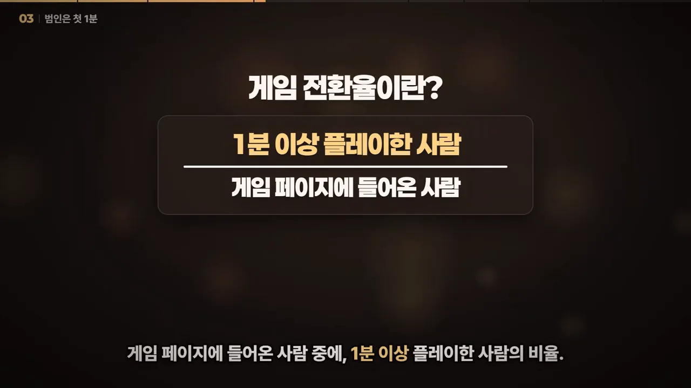
퍼널: 절반 가까이가 1분 안에 나갔어요
11월 2~8일의 플레이어 퍼널이에요. 위에서부터 게임 페이지 방문 1,092명, 로딩 시작 579명, 플레이 시작 557명까지는 초록 막대예요. 그다음 주황색 '1분 이상' 막대가 293명(26.8%)으로 뚝 떨어져요. 그 아래로 10분 이상 73명, 30분 이상 26명, 60분 이상 13명이 이어져요.
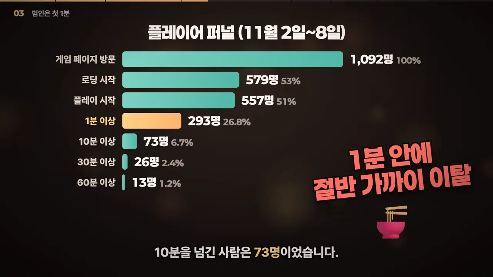
첫 전투까지 74초
팀은 게임 안에 자체 통계 도구를 심어 둬서 그 1분 동안 무슨 일이 있었는지 볼 수 있었어요. 같은 기간 크레이지게임즈로 처음 들어온 플레이어는 401명이에요. 이들이 첫 전투를 시작하기까지 걸린 시간은 중간값 74초, 첫 공식 경기까지는 1분 54초였어요. 영상이 말로 든 이 숫자들을 한 줄의 시간축에 놓으면 이래요.
그 74초 동안 플레이어는 '면접'을 봤어요. 로고가 뜨고, 타이틀에서 아무 키나 누르고, 용병 지원자 여덟 명이 걸어 들어와 한 명씩 뽑아 달라고 호소해요. 아래 화면 오른쪽 목록이 그다음 순서예요. 지원자 카드 읽기, 세 명 뽑기, 주장 정하기, 용병단 이름 짓기를 마쳐야 다섯 번째인 첫 전투가 열려요.
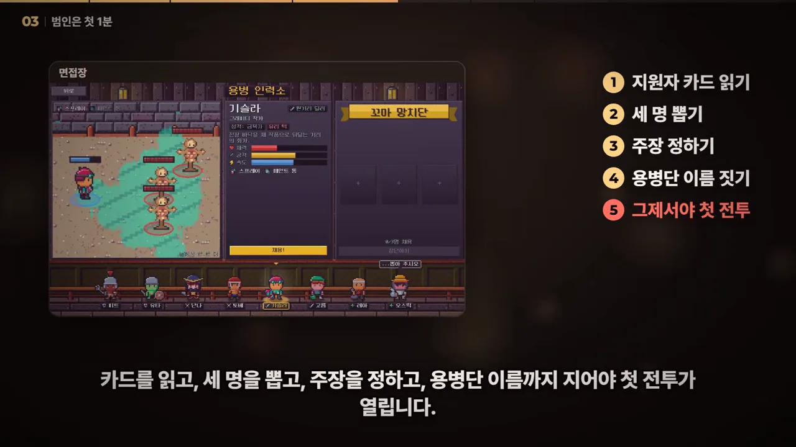
기준은 클릭 한 번, 이 게임은 여덟 번
크레이지게임즈 가이드는 새 유저를 바로 게임플레이로 보내고, 그게 어렵다면 클릭은 최대 한 번까지라고 해요. 아래 화면 위쪽 보라색 상자가 그 인용이에요. 그 아래 커서 여덟 개가 이 게임의 실제 순서예요. 시작, 지원자, 채용을 세 번 되풀이하고, 마지막 빨간 커서가 창단이에요.
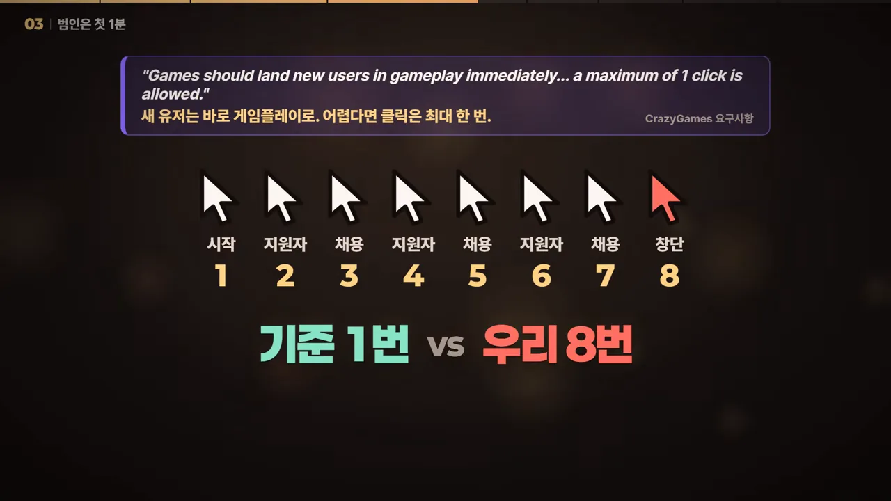
팀은 플레이어가 마지막으로 본 화면도 세어 봤어요. 로딩이나 타이틀에서 시작도 안 누르고 나간 사람이 99명, 면접장에서 나간 사람이 70명이에요. 신규 401명 중 169명, 42%가 칼 한 번 못 휘둘러 보고 떠났어요.
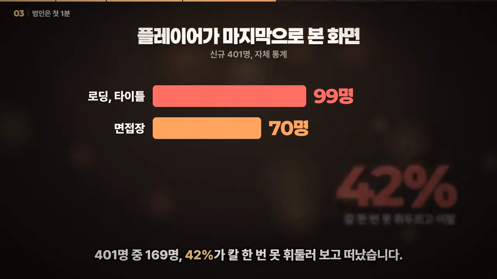
왜 이렇게 됐는지에 대한 팀의 답은 솔직해요. AI와 만들면 직업 하나 추가하는 건 정말 쉬워요. 그래서 첫 1분을 다듬을 시간에 직업을 하나 더 만들고 있었다는 거예요.
언어와 모바일, 그리고 끝까지 남은 사람들
언어의 벽
범인은 하나가 아니었어요. 아래는 신규 플레이어의 기기 언어 분포예요. 초록 막대 두 개(영어 135명, 한국어 40명)만 게임이 지원하는 언어예요. 나머지 빨간 막대는 베트남어 46명, 중국어 38명, 일본어 31명, 포르투갈어 25명, 스페인어 20명 순으로 이어져요. 오른쪽 원그래프가 지원하지 않는 언어의 비율, 56%예요.
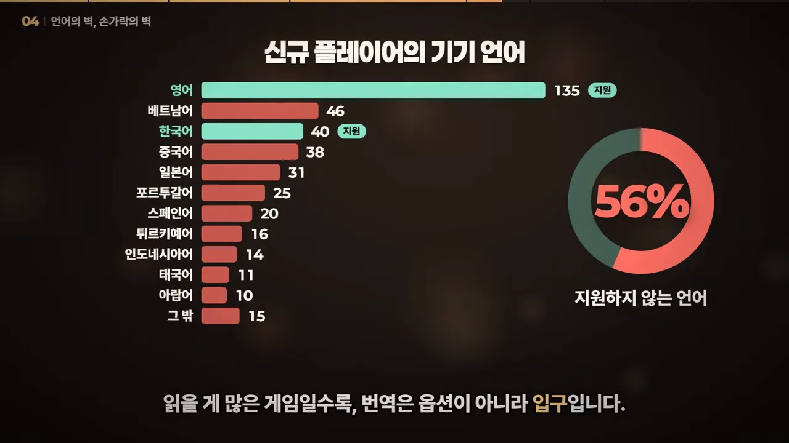
영상은 이걸 한 문장으로 정리해요. 읽을 게 많은 게임일수록 번역은 옵션이 아니라 입구라는 거예요.
손가락의 벽
모바일도 따로 봐야 했어요. 아래 막대 두 개가 게임 전환율이에요. 왼쪽 흰 막대가 데스크톱 42.86%, 오른쪽 빨간 막대가 모바일 18.42%로 절반도 안 돼요.
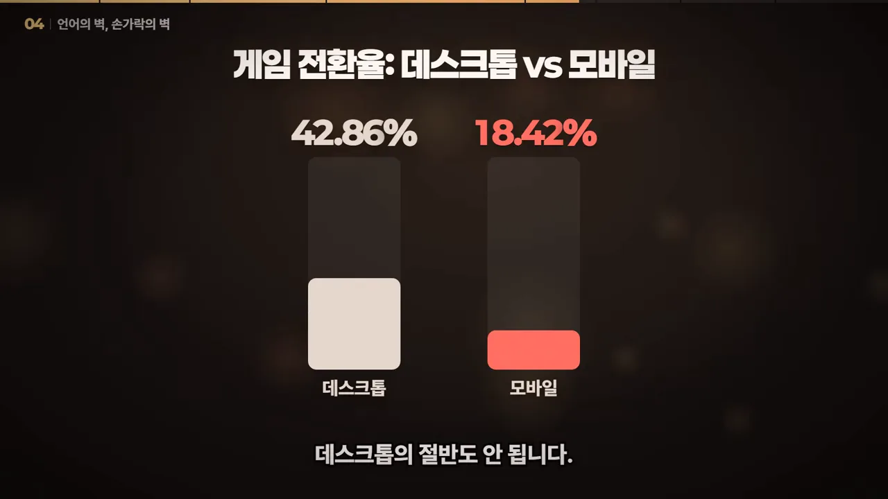
1분을 넘긴 사람은 오래 남았어요
여기까지면 그냥 망한 게임 같지만, 반대 방향의 숫자도 있어요. 아래 화면 왼쪽 카드가 60분 넘게 플레이한 사람 13명, 오른쪽 카드가 한 사람이 치른 경기 467판이에요. 이 한 사람은 만든 팀보다 이 게임을 더 많이 했어요.
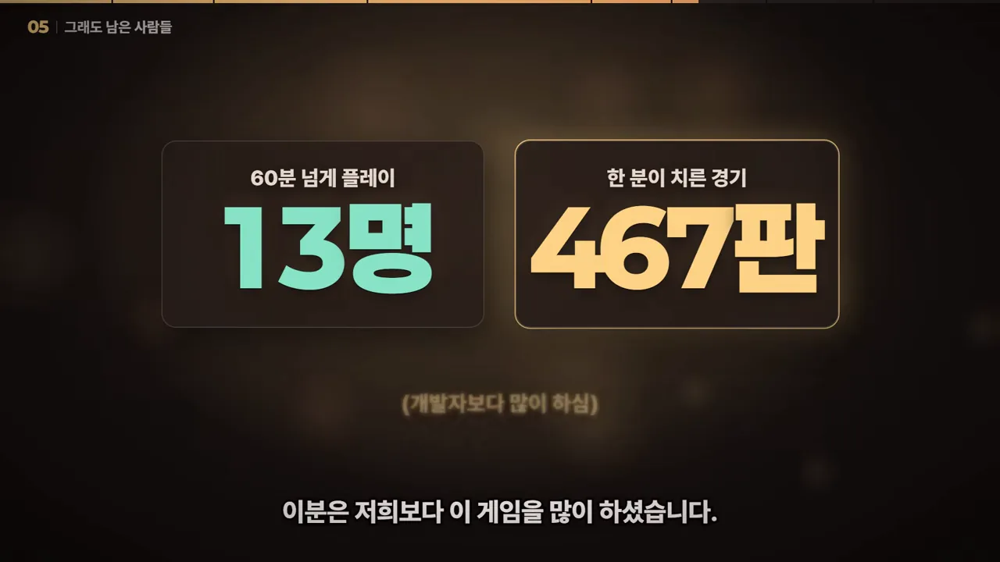
그래서 평점 10점, 좋아요 31개, 싫어요 0개가 나올 수 있었어요. 아래 화면의 점들이 그 이유를 보여 줘요. 밝은 초록 점이 1분을 넘겨 남은 사람이고, 아래쪽 흐린 점들이 1분 안에 조용히 떠난 사람이에요.
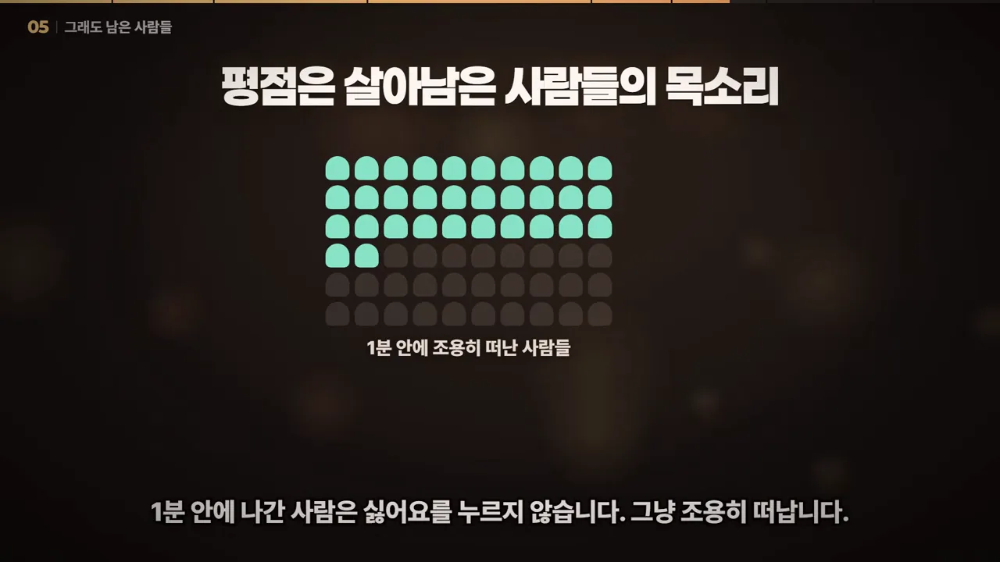
평점은 우리를 위로해 주지만 퍼널은 진실을 말해 줍니다.
— 영상 06:39
시험 중에 고친 빌드 18번
첫 섹션에서 본 빌드 18번은 또 다른 문제를 만들었어요. 한 번은 핵심 화면 스크립트가 컴파일조차 안 되는 빌드가 나갔어요. 아래 대시보드의 왼쪽 그래프가 로딩 크래시 비율이에요. 11월 1~7일에는 3% 아래에 머물다가, 마지막 막대인 11월 8일에 18% 남짓까지 솟았어요.
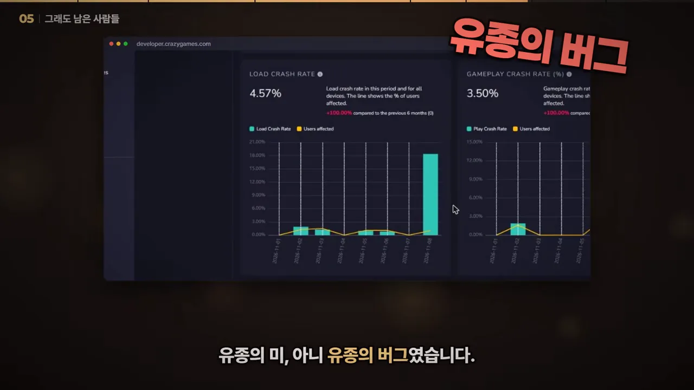
수업료로 배운 것과 다음 계획
팀은 돈 대신 낸 수업료를 여섯 개의 레슨과 보너스 하나로 정리했어요. 화면에 카드로 하나씩 쌓이는데, 여섯 번째와 보너스는 말로만 나와서 표로 모았어요.
| 레슨 | 한 줄 | 이 게임에서 근거가 된 숫자 |
|---|---|---|
| 1 | 첫 클릭에 전투부터. 로고, 타이틀, 캐릭터 생성은 나중에 | 첫 전투까지 74초, 클릭 8번 |
| 2 | 성적은 상대 평가. 같은 장르의 잘 나가는 게임보다 나은지를 봐요 | 평점 10점이어도 탈락 |
| 3 | 글이 많은 게임이라면 번역이 곧 마케팅 | 기기 언어 56%가 미지원 |
| 4 | 모바일은 따로 설계. 작은 화면은 인내심도 작아요 | 모바일 전환율 18.42% |
| 5 | 평점 말고 퍼널. 출시 전에 계측부터 심어 둬요 | 자체 통계로 면접장 이탈을 찾아냄 |
| 6 | 시험 기간엔 빌드를 얼려 둬요 | 빌드 18번, 마지막 날 로딩 크래시 18% |
| 보너스 | AI는 첫 1분을 대신 봐 주지 않아요 | 첫 1분 대신 직업을 하나 더 만들고 있었음 |
여섯 번째 레슨 뒤에 팀은 스스로 묻고 답해요. 이런 걸 모를까 싶겠지만 자기들도 알았다고요. 알았는데 AI랑 직업을 하나 더 만들고 있었다는 거예요. 아래 화면의 '직업 +1' 표시와 초록 테두리 상자가 그 고백과 보너스 레슨이에요.
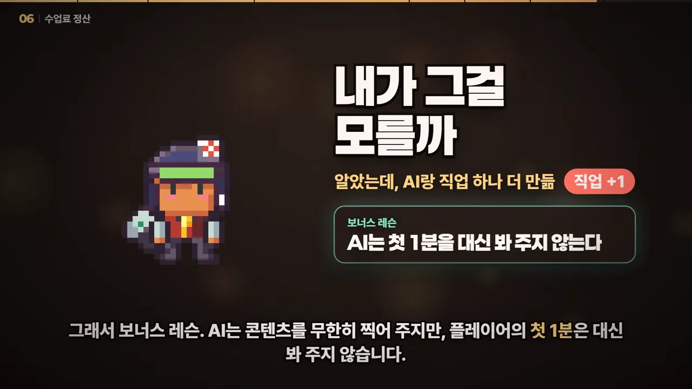
다시 도전한다면
크레이지게임즈는 지표가 대부분 기준 아래면 크게 고쳐서 새 게임으로 다시 내라고 해요. 아래 화면의 체크리스트가 팀의 다음 계획이에요. 체크된 세 줄은 접속하고 몇 초 안에 전투, 면접장은 첫 승리 뒤로, 많이 쓰는 언어부터 번역이에요. 마지막 줄 '결과는 이 채널에서 공개'는 아직 비어 있어요.
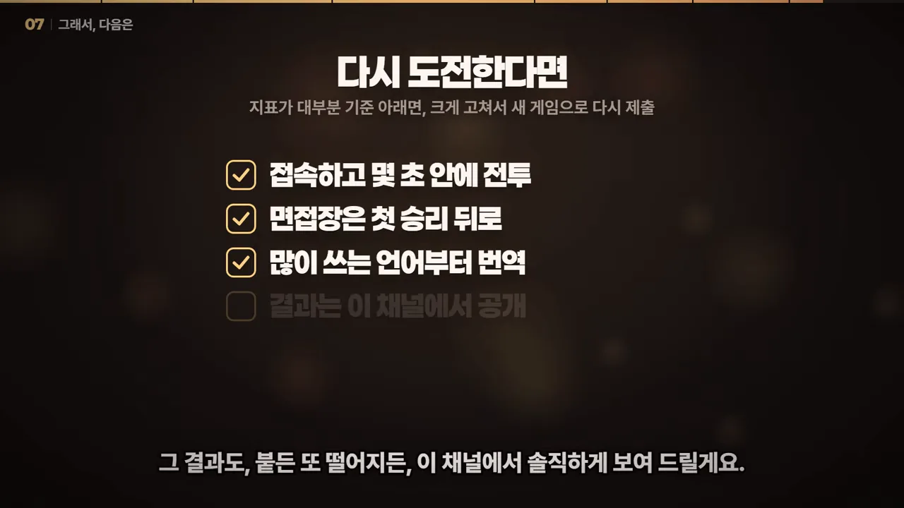